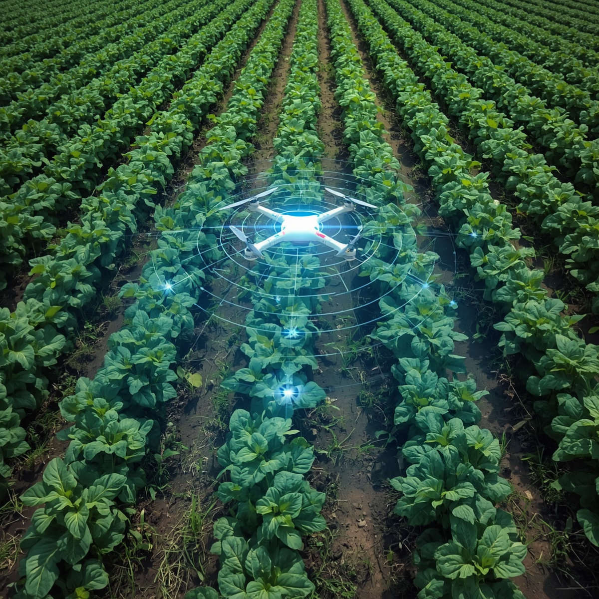
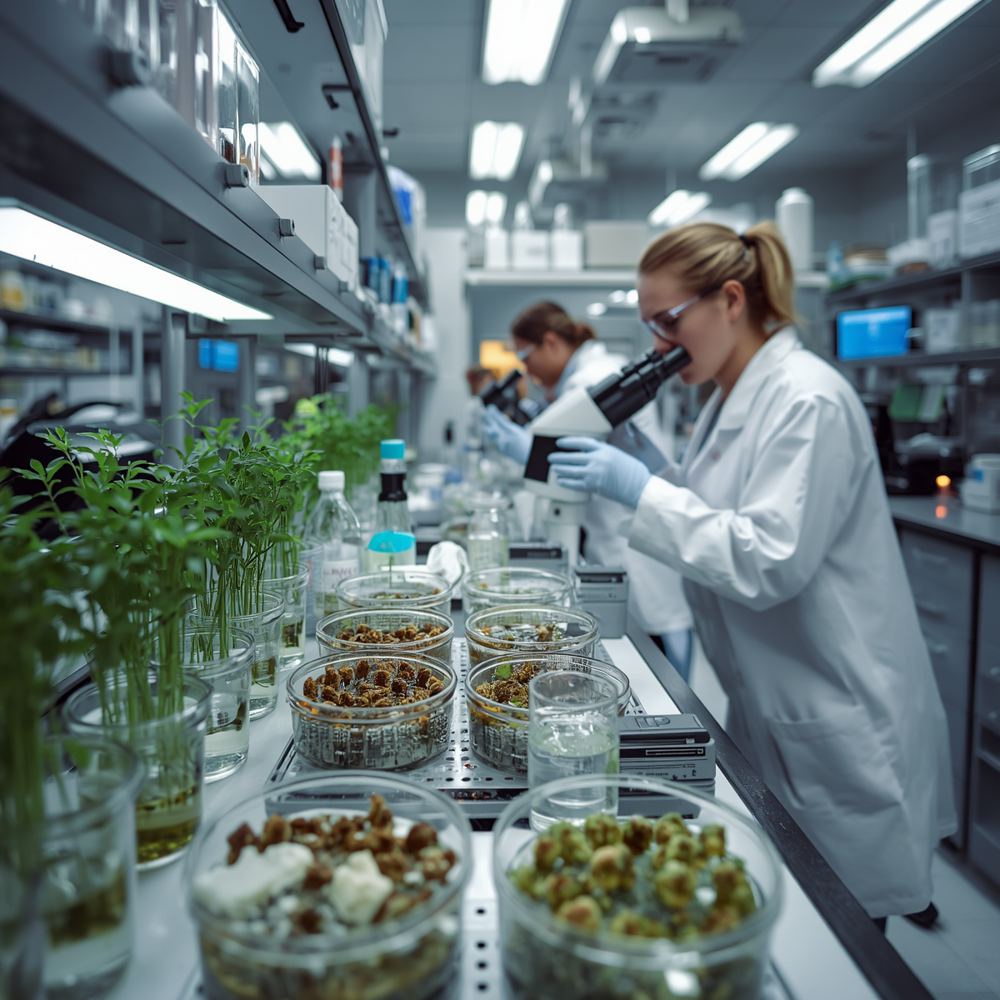

Tecnologia agrícola reforça papel do Brasil
A transformação silenciosa da microbiologia e inteligência artificial posiciona o país na vanguarda da segurança alimentar global.
A agricultura sustentável ganha espaço no debate global em um momento de pressão sobre custos, segurança alimentar, energia e mudanças climáticas. Segundo Luciana Gorab, especialista em Planejamento Estratégico de Vendas, esse cenário coloca o Brasil em posição de destaque por unir produtividade, inovação e capacidade de adaptação no campo.

Enquanto temas como inteligência artificial, guerras comerciais e a nova corrida energética dominam parte das discussões internacionais, uma transformação menos ruidosa vem fortalecendo o papel brasileiro na inovação agrícola. O avanço de tecnologias baseadas no uso de microrganismos nas lavouras mostra como o país pode contribuir para reduzir a dependência de fertilizantes químicos, um dos insumos mais caros e sensíveis da produção de alimentos.
“Num planeta preocupado com segurança alimentar, inflação e mudanças climáticas, talvez uma das soluções mais sofisticadas do século esteja justamente onde o Brasil sempre foi forte: no campo...”
O trabalho da microbiologista brasileira Mariangela Hungria ganhou projeção internacional após décadas dedicadas ao desenvolvimento de bactérias capazes de substituir parte dos fertilizantes industriais. Na prática, esses microrganismos capturam nitrogênio diretamente do ar e o transferem para as plantas, ampliando a eficiência produtiva e reduzindo a necessidade de insumos nitrogenados.
Esse ponto tem peso estratégico. Fertilizantes nitrogenados dependem fortemente de gás natural, recurso sujeito a oscilações de preço, tensões geopolíticas e aumento dos custos energéticos. Nesse contexto, a tecnologia brasileira passa a ser vista como uma alternativa que combina ganhos de produtividade, sustentabilidade, redução de custos e aplicação tropical em escala global.

O reconhecimento internacional veio com o World Food Prize, frequentemente chamado de Nobel da Agricultura. Mais do que uma premiação, o destaque reforça uma mudança de percepção sobre o Brasil, que deixa de ser visto apenas como exportador de commodities e passa a ocupar espaço como protagonista em tecnologia agrícola sustentável. “Porque, às vezes, o verdadeiro ouro não está no solo. Está na inteligência de quem aprende a trabalhar com ele”, conclui Gorab.